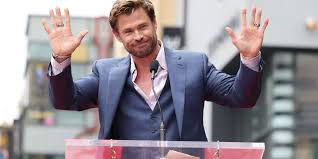

Christopher Hemsworth AM (born 11 August 1983) is an Australian actor. He rose to prominence playing Kim Hyde in the Australian television series Home and Away (2004–2007) before beginning a film career in Hollywood. In the Marvel Cinematic Universe (MCU), Hemsworth starred as Thor in the 2011 film of the same name and reprised the role in several subsequent instalments, which established him among the world's highest-paid actors.
His other film roles include the action films Star Trek (2009), Snow White and the Huntsman (2012) and its sequel The Huntsman: Winter's War (2016), Red Dawn (2012), Blackhat (2015), Men in Black: International (2019), Extraction (2020) and its 2023 sequel, the thriller A Perfect Getaway (2009) and the comedy Ghostbusters (2016). Hemsworth's most critically acclaimed films include the comedy horror The Cabin in the Woods (2012), the biographical sports film Rush (2013) in which he portrayed James Hunt, and the action film Furiosa: A Mad Max Saga (2024).
